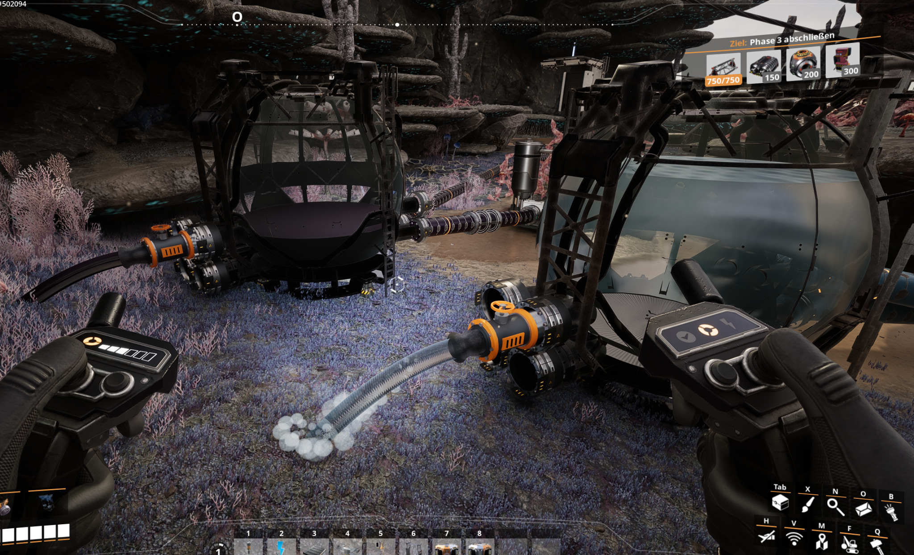
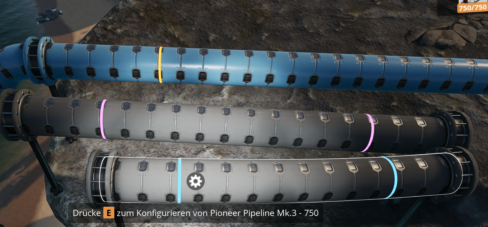
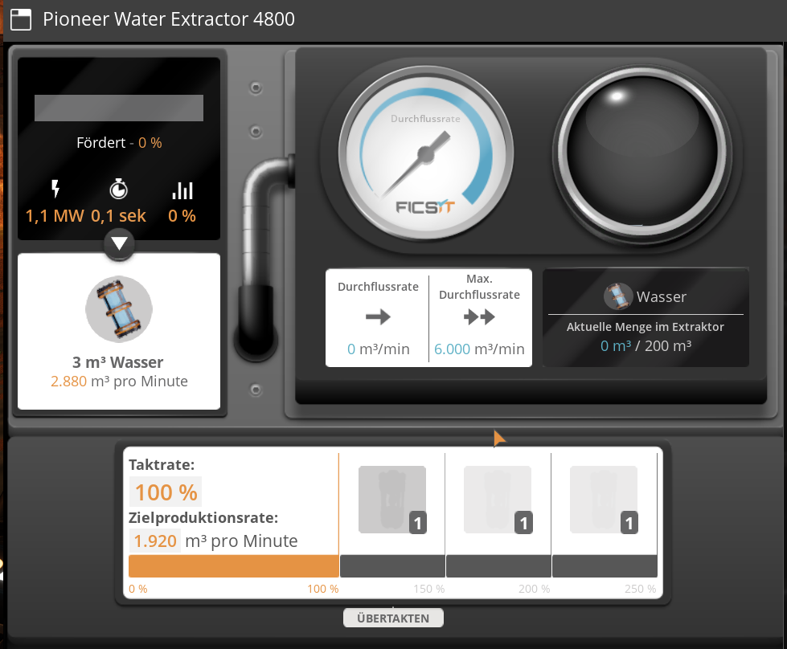
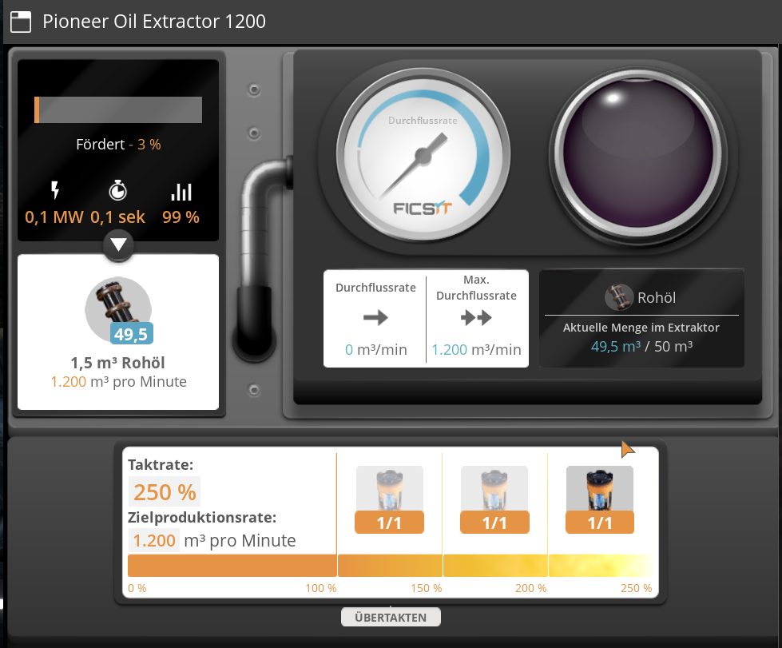
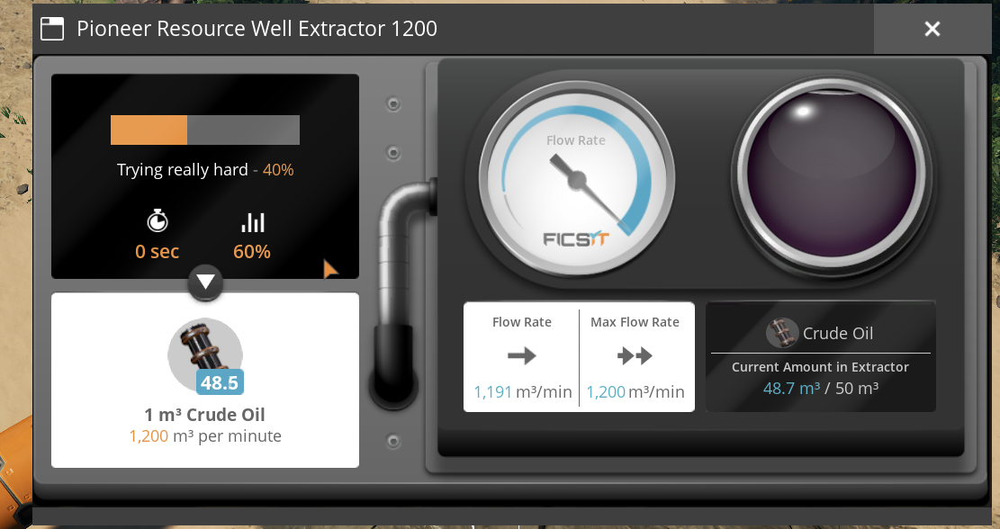
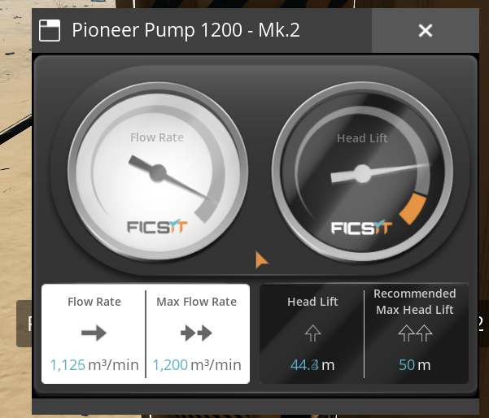
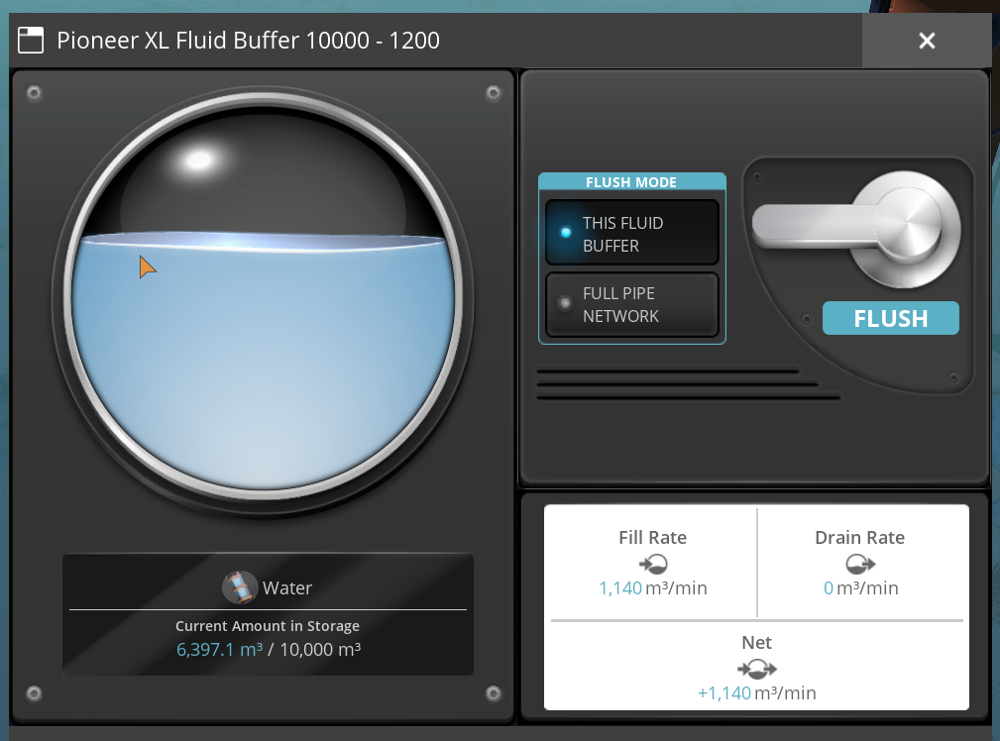
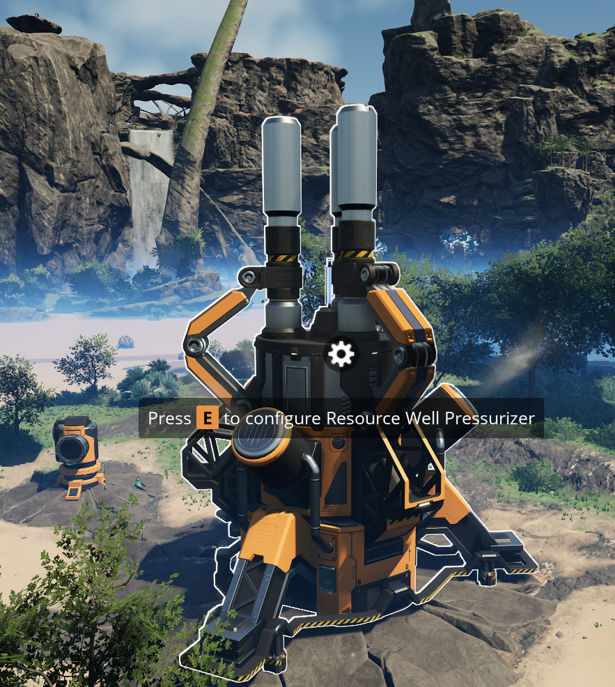
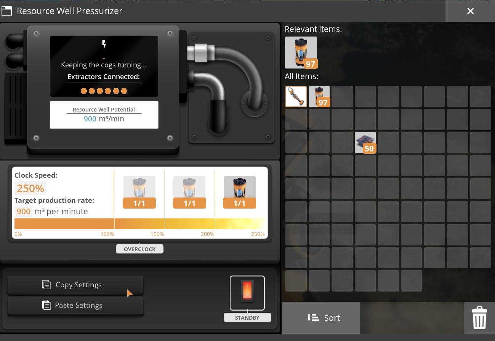
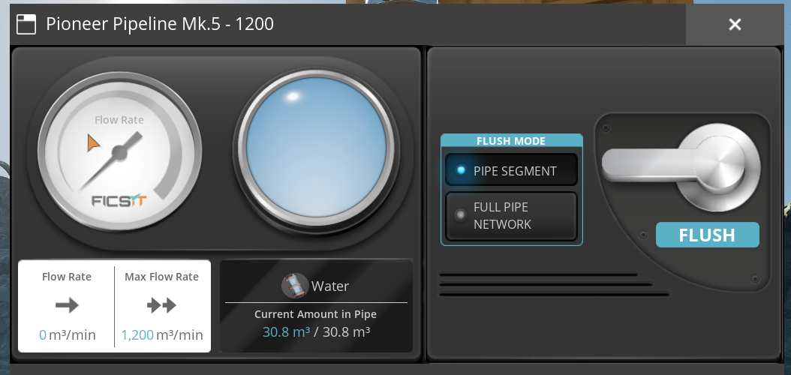

Pioneer Pipelines
More flow. Familiar building. — Version 1.2.1
Pioneer Pipelines expands Satisfactory with pipelines up to 1,200 m³/min, matching pumps, adjustable valves, junctions, fluid buffers, enhanced extractors and automatic relief valves with visible discharge effects.
Buildings
| Building | Capacity / specification |
|---|---|
| Pipeline Mk.3 | 750 m³/min |
| Pipeline Mk.4 | 900 m³/min |
| Pipeline Mk.5 | 1,200 m³/min |
| Pump Mk.1 | 1,200 m³/min · 20 m recommended head lift |
| Pump Mk.2 | 1,200 m³/min · 50 m recommended head lift |
| Adjustable Valve | 0–1,200 m³/min; zero closes the valve |
| T-Junction and Cross Junction | 1,200 m³/min connections |
| Small Fluid Buffer | Vanilla small-buffer capacity; two connections |
| Industrial Fluid Buffer | Vanilla industrial-buffer capacity; four inputs and four outputs |
| XL Fluid Buffer | 10,000 m³ storage; four inputs and four outputs |
| Water Extractor | 1,920 m³/min at 100%; 4,800 m³/min at 250% |
| Oil Extractor | Up to 1,200 m³/min on a pure node at 250% |
| Resource Well Extractor | Up to 1,200 m³/min on a pure satellite at 250% |
| Automatic Relief Valve | Adjustable fill threshold and discharge rate up to 1,200 m³/min; pipe and tank modes |
Buffer connections support 1,200 m³/min per connection. Large glass buffers retain their industrial tank shape and display the stored fluid.
Water extraction
The water extractor has five outlets in a horizontal row: the original centre outlet and two additional outlets on each side. Each outlet supports up to 1,200 m³/min.
Total production is 1,920 m³/min at 100% clock speed and 4,800 m³/min at 250%. Five outlets provide connection flexibility; they do not increase total production to 6,000 m³/min.
Oil and resource well extraction
| Purity | At 100% clock | At 250% clock |
|---|---|---|
| Impure | 120 m³/min | 300 m³/min |
| Normal | 240 m³/min | 600 m³/min |
| Pure | 480 m³/min | 1,200 m³/min |
The Pioneer oil extractor's target and live production cycle calculations account for its current batch size and node purity, including the tested Satisfactory Plus setup.
The standard Resource Well Pressurizer activates the well and controls clock speed. Its aggregate potential display may not reflect the enhanced Pioneer output; check each extractor's production and flow values.
Automatic relief valves
Connect a relief valve to a compatible pipe or tank connection, select the monitoring mode and set the fill threshold and maximum discharge rate. When enabled, the valve releases surplus above the configured threshold.
Liquids leave through an animated stream with droplets and splash effects. Gases use a rising vent effect. Colours are read from the loaded resource descriptors.
Discharged fluid is removed from the network. It is not transferred to another output and does not award AWESOME Sink points. The separate internal test sink remains disabled as playable content.
Flow behaviour
The listed capacities are limits, not guaranteed sustained throughput. Actual flow depends on supply, demand, pipe fill, head lift and the rest of the network. Pipes and buffers do not generate fluid.
Pump head lift remains at 20 m / 50 m. Adjacent pipes must have enough capacity to carry the intended flow. Other mods' buildings are not automatically upgraded. Small fluctuations in the flow display are possible.
Unlocks
The main pipeline and water-extractor unlocks are in HUB Tier 6. The Advanced Fluid Transport milestone provides the expanded transport network; the water extractor has its own milestone. Vanilla wall supports and other accessories retain their own unlock requirements.
Installation and multiplayer
Install the published mod through Satisfactory Mod Manager. All clients and the dedicated server must use the same mod version.
Linux dedicated-server operation has been tested during development. Compatibility with every mod combination is not guaranteed. Source archives are development files and must be built and packaged with Alpakit before they can be installed as a mod.
Version 1.2.1
- Fixed the crash when dismantling a relief valve before its connected glass tank.
- Disconnects both connection ends before unregistering the valve and preserves the endpoint during network cleanup.
- Prevents duplicate unregister calls and late reconnection attempts during dismantling.
- Valve-first, tank-first and mass-dismantle tests completed without a crash in the tested setup.
- Retains the corrected oil extraction rates from 1.2.0.
Renderer requirement
Use DirectX 12 with this version. Known Windows SM5 / DirectX 11 material compilation failures can cause incorrect glass, water and relief-effect rendering. Version 1.2.1 does not fix those shader failures.
In-game screenshots
Screenshots show individual moments and may include other mods. They are not sustained-throughput benchmarks.
Glass fluid tanks and relief valves

Industrial tank shapes with visible contents and animated liquid discharge.
Pipeline Mk.3, Mk.4 and Mk.5

Three transport tiers: 750, 900 and 1,200 m³/min.
Water Extractor 4800

The target panel shows 1,920 m³/min at 100% clock speed. The intended total production at 250% is 4,800 m³/min. The displayed 6,000 m³/min maximum is the combined capacity of five 1,200 m³/min outlets, not the production rate.
In this screenshot the left-hand production panel shows 2,880 m³/min, which disagrees with the target panel. The machine is idle with zero flow; this image does not verify its live production rate.
Oil Extractor 1200

The oil extractor menu shows a 1,200 m³/min production target at 250% clock speed. Actual flow depends on the connected network accepting the output.
Resource Well Extractor 1200

A 1,200 m³/min production target with an instantaneous flow reading of 1,191 m³/min.
Pump Mk.2

1,200 m³/min maximum flow and 50 m recommended head lift.
XL Fluid Buffer

The XL buffer stores up to 10,000 m³. Fill and drain readings depend on the connected network.
Standard Resource Well Pressurizer

The standard pressurizer controls the resource well. It is not an additional Pioneer building.

Its aggregate potential display may not account for enhanced Pioneer extractor output. Check the individual extractors.
Pipeline Mk.5

Report an issue
Please include the mod version, game version, single-player or server setup, affected buildings and steps to reproduce the issue. A screenshot and FactoryGame.log help. For flow problems, also include supply, demand, head lift, clock speeds and valve settings.
Credits and AI transparency
Created by Doesewicht. This is an unofficial Satisfactory mod, not endorsed by Coffee Stain Studios. Satisfactory and its game assets belong to their respective owners.
The logo and illustrations were created with AI assistance. Gameplay images are screenshots. Illustrations do not promise additional in-game 3D models.